- ポータル画面から「物件管理」ボタンをクリックします。
- 物件一覧画面で「物件追加」ボタンをクリックします。
- 登録する内容を入力し、右下の「登録」ボタンをクリックします。
- 登録完了後、物件の詳細画面に遷移します。
- 「ファイル」タブをクリックします。
- 「ファイル選択」をクリックしファイルを選択、または、ドラッグ＆ドロップしたのち、アップロードをクリックします。
- ファイルが登録されます。
- 「写真」タブをクリックします。
- ドラッグ＆ドロップ、またはファイル選択を行い、アップロードをクリックします。
- 写真が登録されます。
-
物件一覧で登録した物件情報を閲覧することができます。
また、キーワードに基づいて検索することも可能です。
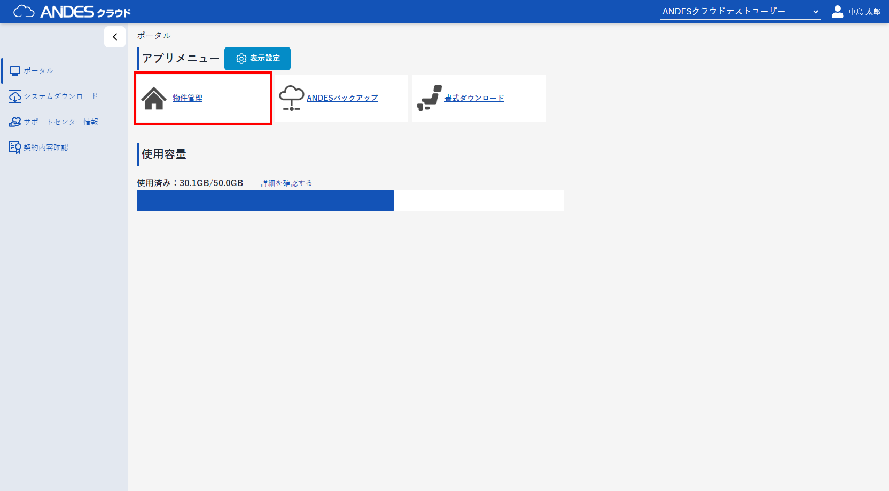
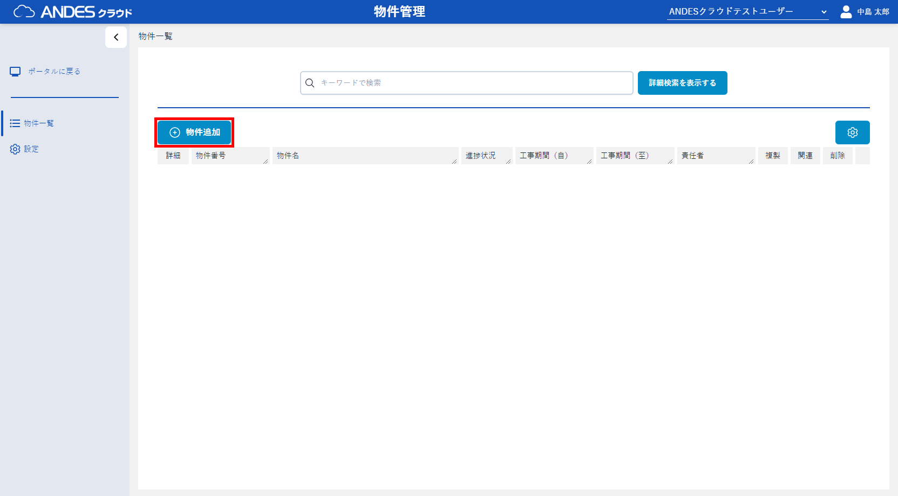

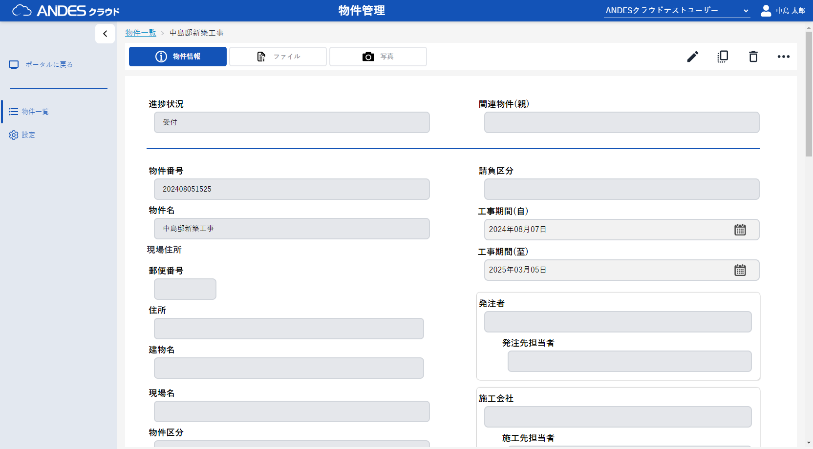
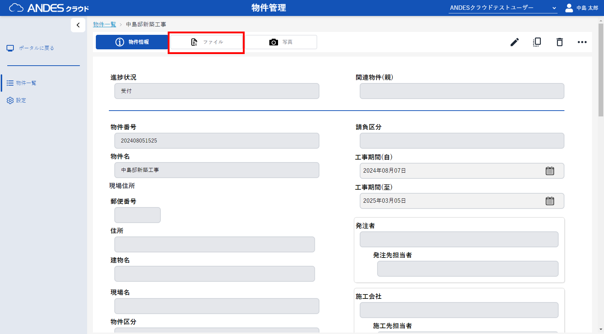
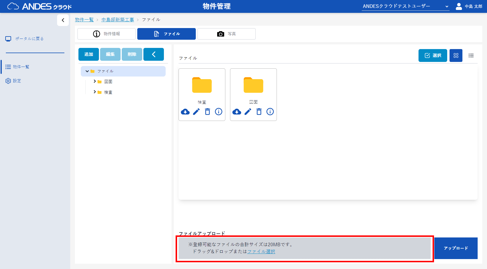
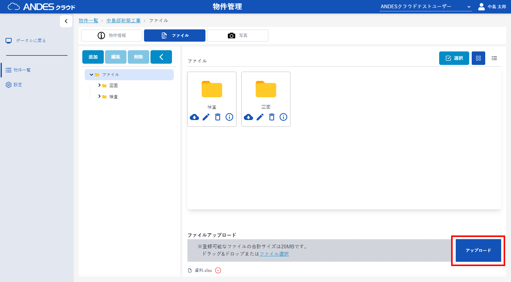
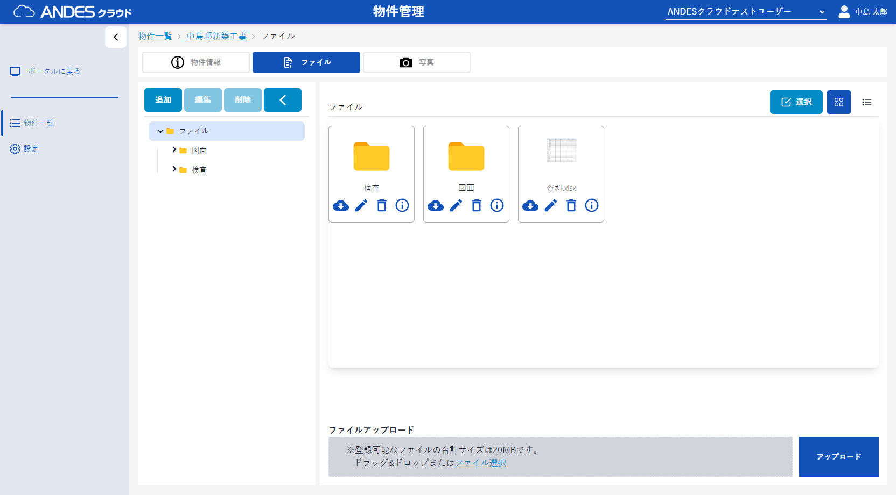
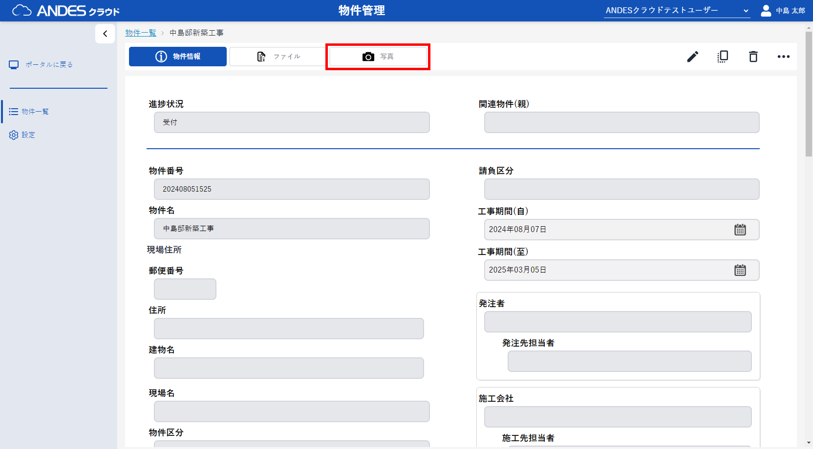
注意
JPG、JPEG、PNG、GIF、BMP、TIF、TIFFファイルのみアップロード可能です。
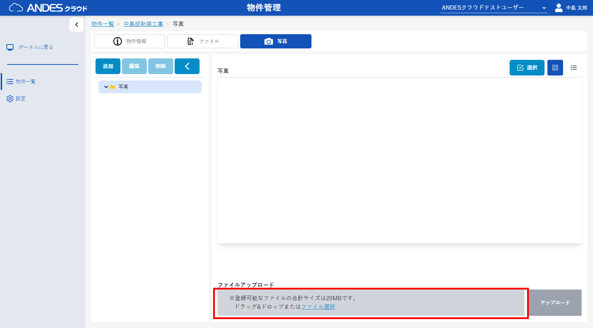
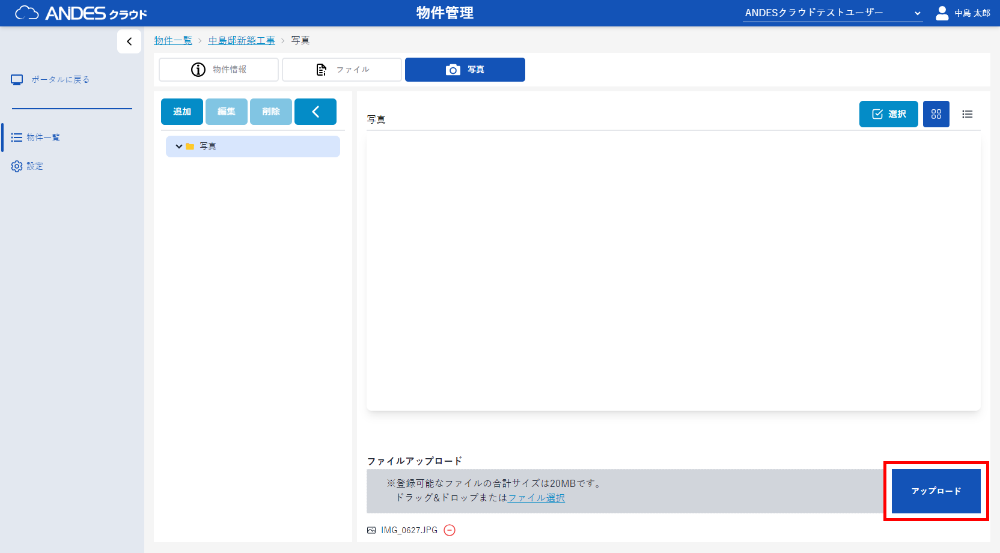
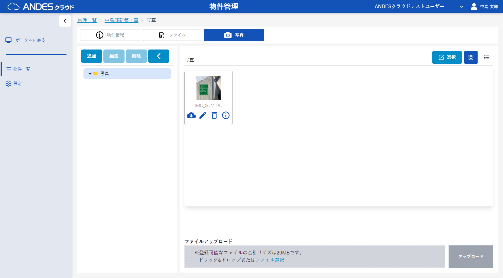
ポイント
フォルダ作成時に枚数を指定することで、設定したフォルダ(工種)ごとの写真の枚数管理ができます。
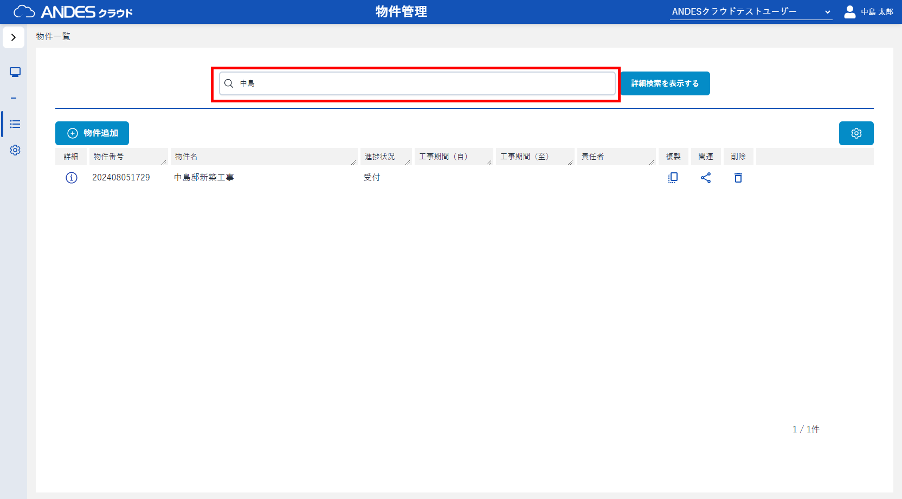